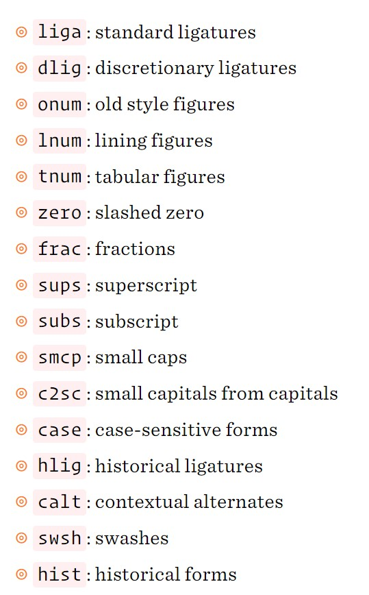

The font-feature-settings property allows control over advanced typographic features in OpenType fonts.
font-feature-settings: normal | feature-value;
Default. Use the default settings to lay out text
Format: string [ 1| 0| on| off ] always a string of 4 ASCII characters.

/* enable small-caps */
.ex1 { font-feature-settings: "smcp" on; }
/* convert both upper and lowercase to small caps */
.ex2 { font-feature-settings: "c2sc", "smcp"; }
/* no common ligatures */
.ex3 { font-feature-settings: "liga" 0; }
/* enable automatic fractions */
.ex4 { font-feature-settings: "frac"; }